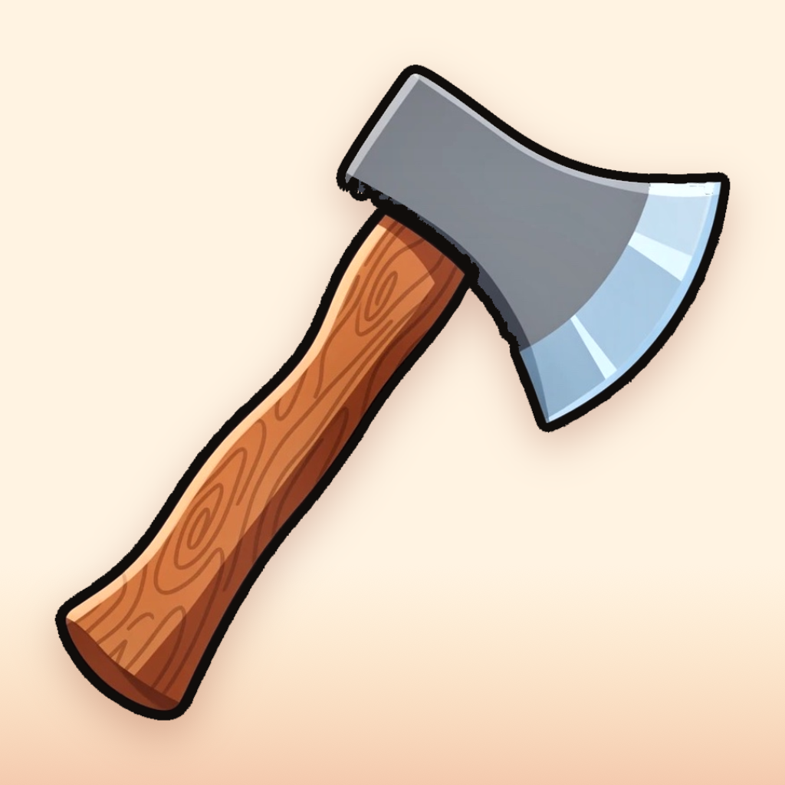
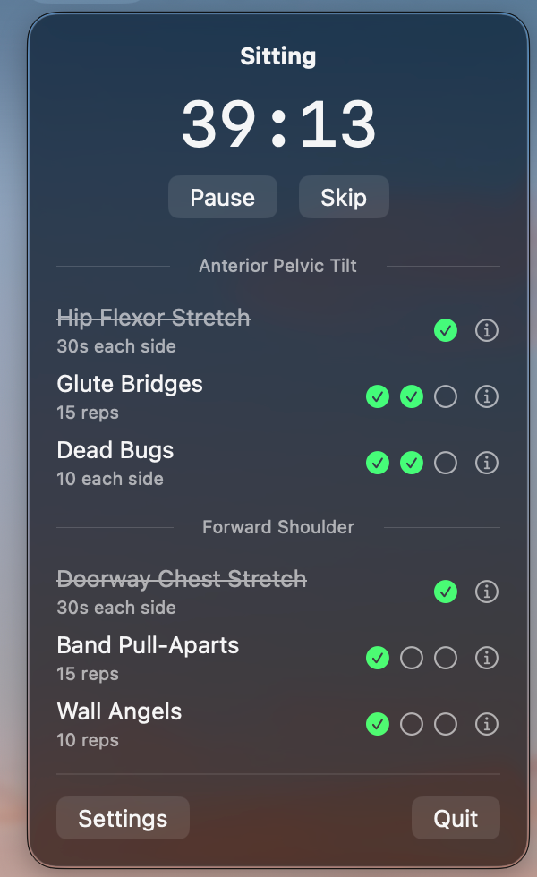
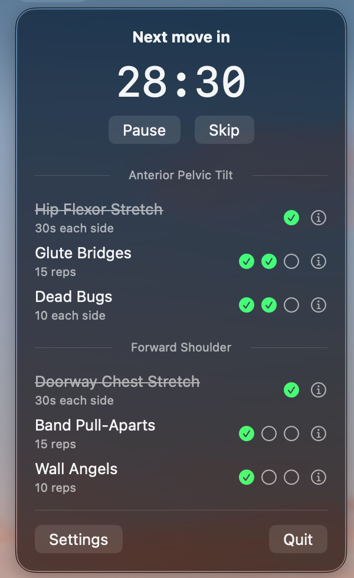
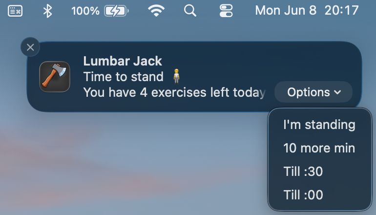

Lumbar Jack
Your posture isn't going to fix itself.
Lumbar Jack lives in your menu bar and quietly reminds you to move, stand, and stretch throughout the workday.
Download on the Mac App StorePay once. No ads. No tracking. No nonsense.
Two modes, one app
Sit/Stand mode for standing desks, Move mode for everyone else. Switch anytime.
Smart reminders
Notifications with snooze and confirm actions. No app-opening required.
Daily exercises
Curated posture exercises grouped by body area, with set tracking and a morning nudge.




Privacy
Zero data collection. Zero network access.
Lumbar Jack is fully sandboxed and runs entirely on your Mac. Your data never leaves your device because there's nothing to send.
Read the full privacy policy